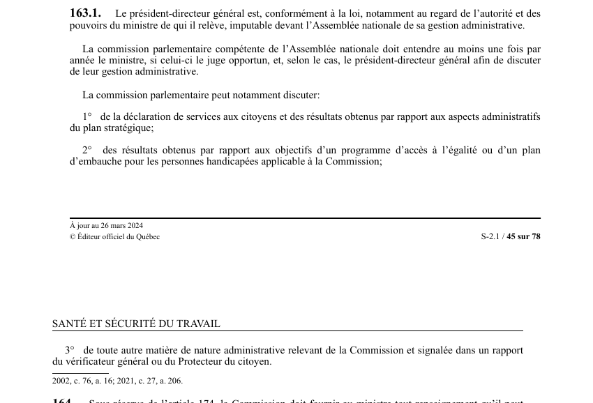

art-163.1-LSST : imputabilité devant l'Assemblée nationale
Un article du wiki ⚖️ Recueil législatif
En bref
Le président-directeur général est imputable devant l'Assemblée nationale de sa gestion administrative ; la commission parlementaire compétente doit entendre au moins une fois par année. Il s'agit d'une obligation.
- Le président-directeur général afin de discuter de leur gestion administrative.
- Au moins une fois par année.
🌐 LegisQuébec · 📄 PDF officiel (page 45)
Texte officiel : capture du PDF
{kind=link}

Toucher l'image pour l'agrandir🔗 Ouvrir a cette page : LSST.pdf : page 45 · texte a jour au 26 mars 2024
Voir aussi
- art. 162.1 : prévisions financières en équité salariale · obligation : le président-directeur général soumet chaque année au ministre les prévisions financières de la Commission en matière d'équité salariale pour l'exercice financier suivant ; ces prévisions doivent pourvoir au maintien des activités.
- art. 163 : rapport annuel au ministre · obligation : la Commission doit, avant le 30 juin de chaque année, faire au ministre un rapport présentant les résultats obtenus au regard des objectifs prévus par son plan stratégique ; ce rapport doit faire état des mandats, de la déclaration de services, des programmes.
- art. 164 : renseignements fournis au ministre · obligation : sous réserve de l'article 174, la Commission doit fournir au ministre tout renseignement qu'il peut requérir.
- art. 165 : vérification comptes Commission · obligation : les livres et les comptes de la Commission sont vérifiés annuellement par le vérificateur général et chaque fois que le décrète le gouvernement ; le certificat du vérificateur général doit accompagner le rapport annuel de la Commission.
- 🔧 Modifié par : LMRSST · Article modificateur de la LMRSST.
- ↑ Loi : LSST
Pages qui pointent ici (6)
- art-162.1-LSST : prévisions financières en équité salariale Recueil législatif
- art-163-LSST : rapport annuel au ministre Recueil législatif
- art-164-LSST : renseignements fournis au ministre Recueil législatif
- art-165-LSST : vérification comptes Commission Recueil législatif
- art-206-LMRSST : modifie l'art. 163.1 LSST Recueil législatif
- LMRSST : Chapitre II : Modifications à la LSST Recueil législatif